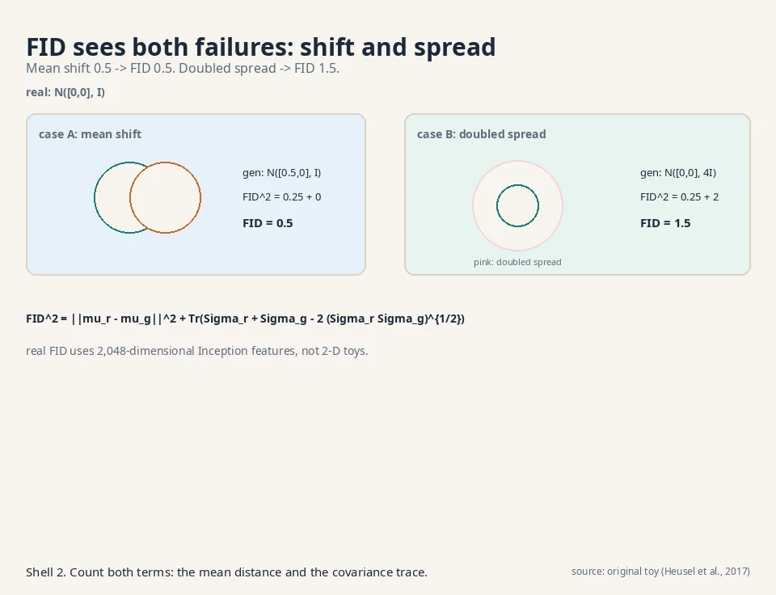
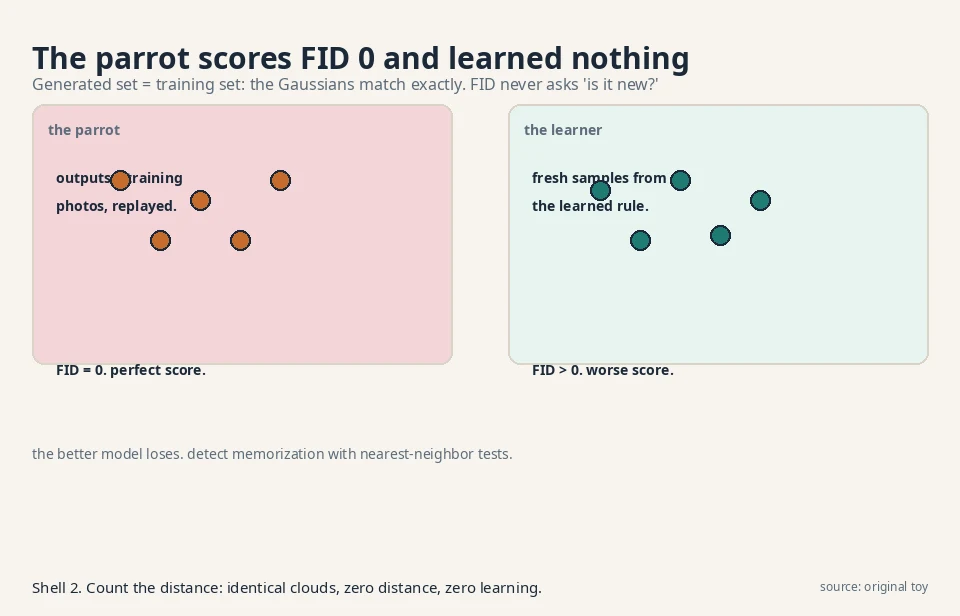
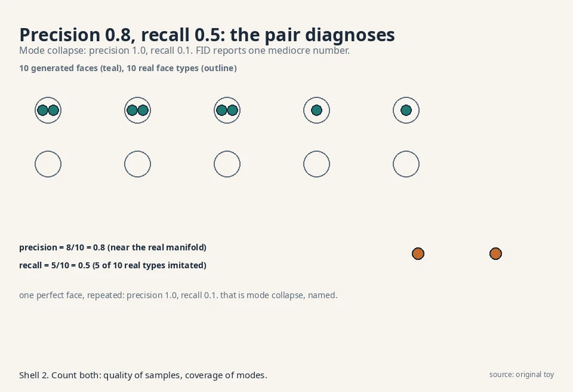
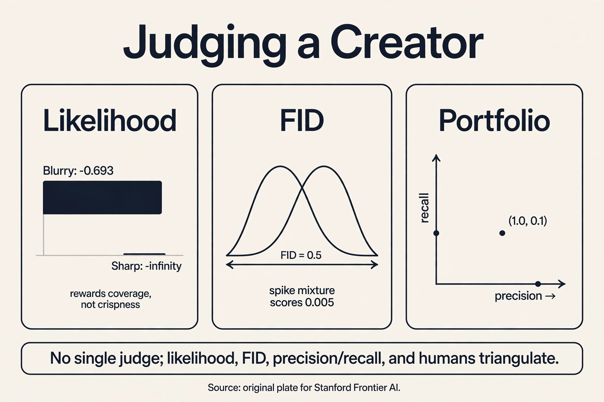

Lecture 8: Judging a Creator: Likelihood, FID, and What They Miss
Video blocked (ad-blocker or local file mode).
Watch on YouTubeVideo not loading? Watch on YouTube
The lecture this chapter follows. Likelihood, FID, and the post-training warning.
The question needs a judge
Eight lessons, five machines, one question: learn the rule, sample from it. Now the uncomfortable part: which machine learned it? “The samples look good” is not a metric. Two models can both produce sharp faces while one memorized the training set and the other learned the rule. The judge must measure distributions, not samples, and every judge has a blind spot. This lesson works each metric by hand and demonstrates each blind spot with numbers.
First attempt: ask humans
The naive judge is human rating: show people samples, ask for scores. It fails three ways, each countable. First, cost: 50 raters x 100 images x 30 seconds per judgment = 41 hours of human time per model comparison. Second, irreproducibility: a different rater pool gives a different ranking, and nobody can re-run your raters. Third, and fatally, humans reward the wrong thing. L01’s parrot, the memory machine that replays training photos, gets 5/5 from every rater: its outputs are real photos. Perfect human score, zero learning. A judge that cannot tell memorization from generalization is not a judge.
The key question
What if we measure the distance between distributions with metrics that see what eyes miss: coverage, likelihood, and feature statistics?
Metric 1: likelihood, the coverage judge
Models with exact densities (the storyteller, the warper) can be scored by likelihood: the probability they assign to held-out data they never trained on. Higher is better. Work it on L02’s toy. Model A gives P(“the cat sat”) = 0.60, model B gives 0.40:
log-lik A = log 0.60 = -0.511 nats log-lik B = log 0.40 = -0.916 nats A wins by 0.405 nats
Likelihood is the only metric that asks “did you learn the whole rule?” But it has a demonstrated blind spot: it rewards coverage over sharpness. True data: faces at -5 and +5, half each. Model Sharp puts all mass at +5: gorgeous samples, misses half the data. Model Blurry puts 0.5 on each: dull, correct coverage.
held-out face at -5: Sharp: log p = log(0+) = -infinity Blurry: log p = log 0.5 = -0.693 Blurry wins by infinity
One missed mode costs infinite nats. Likelihood punishes a dropped mode infinitely and barely punishes blur. So the blurry VAE beats the sharp GAN on likelihood while losing every beauty contest. Likelihood measures “did you cover everything,” never “are your samples crisp.” And three of our five machines (VAE bound, diffusion bound, EBM unnormalized) cannot even report it exactly.
Subchapter: bits per dimension: likelihood’s fair scale
Raw log-likelihoods do not compare across datasets: a bigger image has more nats by construction. Bits per dimension (bpd) normalizes: bpd = -log2 p(x) / d, the average surprise per pixel per channel, in bits. Lower is better. A model at 3.5 bpd on CIFAR-10 assigns each pixel-channel about 2^3.5 = 11.3 effective choices of surprise: tighter than uniform (8 bits), looser than perfect prediction (0 bits).
Bpd is the fair scale for the exact-density families. Flows report it (dequantized, per L04). Autoregressive models report it. Diffusion models can report it via the full weighted ELBO, but usually do not: the L_simple objective that trains the best samples is not a bound, and the bound that is honest trains worse samples. [uncertain]: exact bpd numbers for current diffusion models. The field’s revealed preference is the point: sample quality won, likelihood reporting lost.
The decision rule: compare bpd only within one dataset and one dequantization scheme. A bpd of 3.1 on CIFAR-10 and 3.1 on ImageNet-64 are not the same achievement. And never compare a bound’s bpd against an exact bpd without saying which is which: the bound flatters the model by an unknown gap.
Metric 2: FID, the feature judge
The Frechet Inception Distance compares real and generated images in the feature space of an Inception network pretrained on ImageNet. Fit a Gaussian to each set’s features, then take the Frechet (Wasserstein) distance between the Gaussians:
FID^2 = ||mu_r - mu_g||^2 + Tr(Sigma_r + Sigma_g - 2 (Sigma_r Sigma_g)^{1/2})
mu_r, Sigma_r: mean and covariance of real features. mu_g, Sigma_g: the same for generated. Lower is better. Work it on 2-D toys. Real features N([0,0], I), generated N([0.5,0], I):
FID^2 = 0.25 + Tr(I + I - 2I) = 0.25 + 0 = 0.25 FID = 0.5
Now give the generator the right mean but double the spread, Sigma_g = 4I. (Sigma_r Sigma_g)^{1/2} = 2I:
FID^2 = 0.25 + Tr(I + 4I - 4I) = 0.25 + Tr(I) = 2.25 FID = 1.5

FID sees both failures: shifted means (0.5) and wrong spreads (1.5 vs 0.5). It correlates with human judgment better than any earlier metric, which is why the field adopted it.
Three blind spots, each demonstrated. First, memorization: FID between the training set and itself is 0. The parrot scores perfectly. FID never asks whether samples are new. Second, the Gaussian assumption: FID fits one bell curve per set and is blind to shape differences the bell curve erases. Real features N(0,1). Generated features a 50/50 mix of spikes at -1 and +1 with width 0.1. Same mean 0, variance 1.01 vs 1.00:
FID^2 = 0 + (1 + 1.01 - 2 sqrt(1.01)) = 2.01 - 2.0100 = 0.0000 FID ~ 0.005
Nearly perfect FID for a generator that makes only two spikes and misses everything between. Third, the features: the Inception layer is a hyperparameter, and ImageNet features judge dog photos well and medical scans poorly. FID measures distance in someone else’s feature space.
Subchapter: KID: the unbiased cousin
FID’s estimator is biased: with finite samples, the estimated FID systematically overshoots the truth, and the bias shrinks only as sample count grows. Comparing a 10k-sample FID against a 50k-sample FID is comparing two different biases. KID (Kernel Inception Distance, Binkowski et al., 2018) replaces the Frechet distance with the maximum mean discrepancy: a kernel-based distance between the two feature clouds with an unbiased estimator.
The tradeoff is compute: KID’s unbiased estimator costs O(n^2) in sample count against FID’s O(n). At 50,000 samples, that is 2.5 billion kernel evaluations: nobody runs it there. The decision rule: FID for leaderboards (large n, bias roughly equal across models, standard practice), KID for small-sample comparisons where FID’s bias would dominate. Both inherit the memorization blind spot: neither asks if the samples are new.
Subchapter: memorization tests: catching the parrot
FID 0 for the parrot is a scandal the field patches with separate tests. The standard one is the nearest-neighbor test: for each generated sample, find its closest training image (in pixels or features) and record the distance.

The parrot’s distances are all ~0: every “sample” is a training photo. A healthy generator’s distances spread out: some near, most far. The decision rule: report the fraction of samples within epsilon of a training image. Near 1.0 means memorization. Near 0.0 with good FID means genuine generation. Diffusion models get extra scrutiny here because their training sets are enormous and their samples occasionally reproduce training images verbatim: the test that catches it is nearest-neighbor, not FID.
A second test: train/test FID split. Compute FID against the training set and against a held-out test set. A memorizer scores ~0 on train and poorly on test. A generalizer scores similarly on both. Two numbers where the leaderboard shows one.
Metric 3: Inception Score, the sharpness-diversity judge
The Inception Score never looks at real data. It asks two things of generated samples: is each sample confidently one thing (sharp), and do the samples cover many things (diverse)? With p(y|x) the classifier’s label distribution per sample and p(y) the average:
IS = exp( E[ KL(p(y|x) || p(y)) ] )
Its blind spot is memorization at scale, demonstrated. A model that outputs exactly one memorized photo per ImageNet class, cycling through all 1,000 classes: each p(y|x) is one-hot, so KL = log 1000 = 6.9078 nats per sample, and p(y) is uniform:
IS = exp(6.9078) = 1000
A perfect score for a 1,000-photo memory machine. IS also rewards anything the classifier finds confident, including sharp images of nothing real. The field keeps it for quick checks and trusts FID more.
Explainer: Applied Deep Learning, Lecture 69, Frechet inception distance. What FID computes, why it beats the Inception Score, and where it breaks. Watch after the FID section.
The honest price: no single judge
The lecture’s warning frames everything: after training, P_theta* is not P_X. Sample averages stand in for the true distribution, lower bounds stand in for likelihoods, gradient descent stops early. Every metric measures the trained artifact, not the platonic model, and every metric is blind somewhere:
| Metric | Measures | Blind spot, demonstrated |
|---|---|---|
| Human rating | True visual quality | Parrot scores 5/5. 41 hours per comparison |
| Likelihood | Full-distribution coverage | Blurry beats Sharp by infinity. 3 of 5 families cannot report it |
| FID | Feature-space distance | Memorization scores 0. Spike mixture scores 0.005. ImageNet features |
| KID | Feature-space distance, unbiased | Same blind spots as FID. O(n^2) cost |
| Inception Score | Sharpness + diversity | 1,000-photo memory machine scores 1000. Never sees real data |
The working answer is a portfolio. Precision and recall disentangle what FID averages: precision = fraction of generated samples near the real manifold (quality), recall = fraction of real modes the generator covers (coverage). Count it on a toy: 10 generated faces, 8 near real faces, and 10 real face types, 5 imitated:
precision = 8/10 = 0.8, recall = 5/10 = 0.5

A mode-collapsed generator that makes one perfect face: precision 1.0, recall 0.1. The pair catches what any single number hides. Use likelihood where it exists, FID for the leaderboard, precision/recall for the diagnosis, humans for the final word. No metric replaces the question. Together they triangulate it.
Subchapter: density and coverage, refined
Raw precision/recall uses a fixed neighborhood radius, which is fragile. Density and coverage (Naeem et al., 2020) refine it with k-nearest-neighbor manifolds. Density: for each generated sample, count how many real neighborhoods contain it, averaged. High density means samples land where real data is dense. Coverage: the fraction of real samples whose neighborhood contains at least one generated sample. High coverage means no real mode is abandoned.
The refinement matters because a generator can game raw recall by scattering noisy samples near many modes: each mode gets “covered” by garbage. Density punishes that: scattered samples land in low-density neighborhoods and score poorly. The decision rule: precision/recall for the quick diagnosis, density/coverage when you suspect gaming. Both live in feature space, so both inherit the Inception-features caveat.
What is used where: the judges in production
| Judge | Where it runs | Evidence |
|---|---|---|
| FID | Papers-with-code leaderboards. Every text-to-image paper reports it | Public: Heusel et al., 2017, arxiv 1706.08500. The field standard since 2017 |
| Human eval | Model launches (DALL-E 2, Imagen papers report human preference rates) | Public: Ramesh et al., 2022, arxiv 2204.06125 (DALL-E 2). Saharia et al., 2022, arxiv 2205.11487 (Imagen) |
| Likelihood / bpd | Flow and autoregressive papers, compression benchmarks | Public: Kingma and Dhariwal, 2018, arxiv 1807.03039 (Glow). Dinh et al., 2016, arxiv 1605.08803 (RealNVP) |
| CLIP score | Text-to-image alignment: cosine similarity of prompt and image CLIP embeddings | Public: Ramesh et al., 2022, arxiv 2204.06125 (DALL-E 2 reports CLIP score) |
| Nearest-neighbor tests | Memorization audits of diffusion models | Public: Somepalli et al., 2023, arxiv 2212.03860 (diffusion memorization study) |
The pattern: FID for the leaderboard, humans for the launch, likelihood where it exists, CLIP for prompt match, nearest-neighbor for the parrot audit. No lab ships on one number.
Likelihood punishes missed coverage infinitely and blur barely. On the toy, true data is faces at -5 and +5. Model Sharp puts all mass at +5 and scores log(0+) = -infinity on a held-out -5 face, while Model Blurry’s 0.5/0.5 split scores -0.693. Likelihood asks “did you cover everything,” never “are samples crisp.” That is why VAEs win likelihood contests and lose beauty contests. No. It is the only metric that checks the whole distribution, and it is exact for the storyteller and the warper. But it cannot rank a GAN against a diffusion model (neither reports exact likelihoods), and it disagrees with human judgment on sharpness. Use it where it exists, for what it measures: coverage.
Fit a Gaussian to Inception features of real images (mu_r, Sigma_r) and another to generated images (mu_g, Sigma_g), then take the Frechet distance: ||mu_r - mu_g||^2 + Tr(Sigma_r + Sigma_g - 2(Sigma_r Sigma_g)^{1/2}). On the 2-D toy, a mean shift of 0.5 gives FID 0.5. Doubling the spread gives FID 1.5. Lower is better. It sees both location and spread errors in feature space. FID compares two feature distributions. If the generated set equals the training set, the Gaussians match exactly and FID = 0. Nothing in the formula asks whether a sample is new. Detecting memorization needs nearest-neighbor tests against the training set, a separate check the lecture’s evaluation pipeline does not include.
When you need the diagnosis, not just the ranking. FID is one number mixing quality and coverage. Precision/recall splits them. The toy mode-collapsed generator (one perfect face) shows why: precision 1.0, recall 0.1. FID would report a single mediocre number. The pair names the disease: perfect quality, no coverage. For model development the pair beats the scalar. Yes. Both depend on a neighborhood rule in feature space (which Inception layer, what radius), and a generator can inflate recall by scattering noisy samples near many modes. No metric survives adversarial optimization against itself. That is why the honest answer is a portfolio plus human judgment, not a single number.
Real features: N([0,0], I), so mu_r = [0,0], Sigma_r = I. Generated: N([0.5,0], I), so mu_g = [0.5,0], Sigma_g = I. Mean term: ||[0.5,0]||^2 = 0.25. Covariance term: Tr(I + I - 2(I x I)^{1/2}) = Tr(0) = 0. FID^2 = 0.25, FID = 0.5. Now double the generated spread: Sigma_g = 4I. Mean term still 0.25. Covariance term: Tr(I + 4I - 2(4I)^{1/2}) = Tr(I + 4I - 4I) = Tr(I) = 2. FID^2 = 2.25, FID = 1.5. The plate draws both cases. The formula is identical. Only the dimension changes. The 2-D toy lets you verify the arithmetic by hand. In 2,048 dimensions the matrix square root (Sigma_r Sigma_g)^{1/2} is the expensive step, computed numerically. Same math, bigger matrices.
FID’s estimator overshoots with finite samples, and the bias depends on sample count. Comparing a 10k-sample FID with a 50k-sample FID compares two different biases. KID’s MMD estimator is unbiased, so small-sample comparisons are fair. The price is O(n^2) compute: at 50k samples KID is unaffordable, FID is routine. Rule: FID for leaderboards, KID for small-n ablations. No. KID compares the same two feature clouds as FID. A parrot’s clouds match exactly under MMD too. Unbiasedness fixes the sample-count problem, not the novelty problem. Memorization needs nearest-neighbor tests, a different instrument.
Nearest-neighbor distances. For each of 10,000 generated samples, find the closest training image and record the distance. The parrot’s distances are ~0: every output is a training photo. A healthy generator’s distances spread: a few near, most far. Report the fraction within epsilon of a training image: near 1.0 is memorization, near 0.0 with good FID is genuine generation. Second test: FID against train vs against held-out test. The parrot scores ~0 on train and badly on test. The generalizer scores similarly on both. Their training sets are enormous (billions of images) and their samples occasionally reproduce training images verbatim. FID cannot see this. It compares distributions, not instances. Every memorization audit of a diffusion model runs nearest-neighbor, not FID.
Five instruments. FID for the leaderboard: feature-space distance to real images, catches quality and coverage regressions. CLIP score for prompt match: catches “beautiful but wrong” generations. Precision/recall for diagnosis: precision catches quality drops, recall catches mode collapse. Nearest-neighbor for the parrot audit: catches memorization before lawyers do. Humans for the final word: catches everything the numbers miss, at 41 hours per comparison. No single number ships. The blind spots in order: memorization (nearest-neighbor: did FID reward copying?), the feature space (is Inception judging your domain badly?), then precision vs recall (did quality rise while coverage fell, or vice versa?). FID improving while users complain means the metric and the users measure different things: find which one moved.

Recap: the whole lesson on one screen
- The question needs a judge. Five machines, one question. “Looks good” is not a metric.
- Humans fail, counted. The parrot scores 5/5. 41 rater-hours per comparison. Irreproducible.
- Likelihood, by hand. log 0.6 = -0.511 beats log 0.4 = -0.916. Blind spot: Blurry beats Sharp by infinity (-0.693 vs -infinity). Coverage, not crispness. Bits per dimension is the fair scale.
- FID, by hand. Mean shift 0.5 -> FID 0.5. Doubled spread -> FID 1.5. The field’s standard. KID is the unbiased cousin for small samples.
- FID’s blind spots, numbered. Memorization: FID 0. Spike mixture: FID 0.005 with same mean/variance. ImageNet features judge dogs, not scans.
- Catching the parrot. Nearest-neighbor distances: the parrot’s are ~0. Train/test FID split: the memorizer diverges.
- Inception Score, gamed. A 1,000-photo memory machine scores IS = 1000. Never sees real data.
- The key question. What if metrics see what eyes miss? Answer: a portfolio.
- Precision/recall. Toy: precision 0.8, recall 0.5. Mode collapse: 1.0 and 0.1. The pair diagnoses. Density/coverage refines against gaming.
- No single judge. Likelihood where it exists, FID for the leaderboard, CLIP for prompt match, precision/recall for diagnosis, nearest-neighbor for the parrot audit, humans for the final word.
Official sources and further reading
Official: - W4L16: Evaluation of Generative Models (video 5Mchnh2xedI): the lecture this chapter follows. The FID formula, the Inception-feature construction, and the post-training P_theta* != P_X warning are confirmed from the lecture transcript. - Heusel et al. (2017): https://arxiv.org/abs/1706.08500 (FID).
Further reading: - Salimans et al., Improved Techniques for Training GANs (2016): the Inception Score. - Binkowski et al., KID (2018): https://arxiv.org/abs/1801.01401 (the unbiased cousin). - Kynkäänniemi et al., precision and recall (2019): https://arxiv.org/abs/1904.06991 (the diagnostic pair). - Naeem et al., density and coverage (2020): the gaming-resistant refinement. - Stanford CS236, Lecture 11 slides: https://deepgenerativemodels.github.io/2018/assets/slides/cs236_lecture11.pdf (FID and KID side by side).
Caveats from these sources. The 2-D Gaussian toys are illustrative. Real FID uses 2,048-dimensional Inception features over tens of thousands of images. The spike-mixture FID of 0.005 assumes matched first two moments. Real feature distributions differ in subtler ways FID partially sees. IS = 1000 is the theoretical maximum for the memory machine, not a reported result.
Connections to the other courses
- math-genai (sibling): the divergence view of evaluation: FID is a Wasserstein distance between fitted Gaussians. The f-divergence lessons explain what likelihood optimizes.
- L01-L07 (this course): every price named in this course is priced again here: the metric that catches each family’s failure mode.
- CS229 L11: the quality-vs-likelihood tension in diffusion: the best-looking samplers are rarely the best likelihood models.
- CS336: evaluation at scale: why leaderboards standardize on FID despite its blind spots, and the cost of human eval for frontier models.